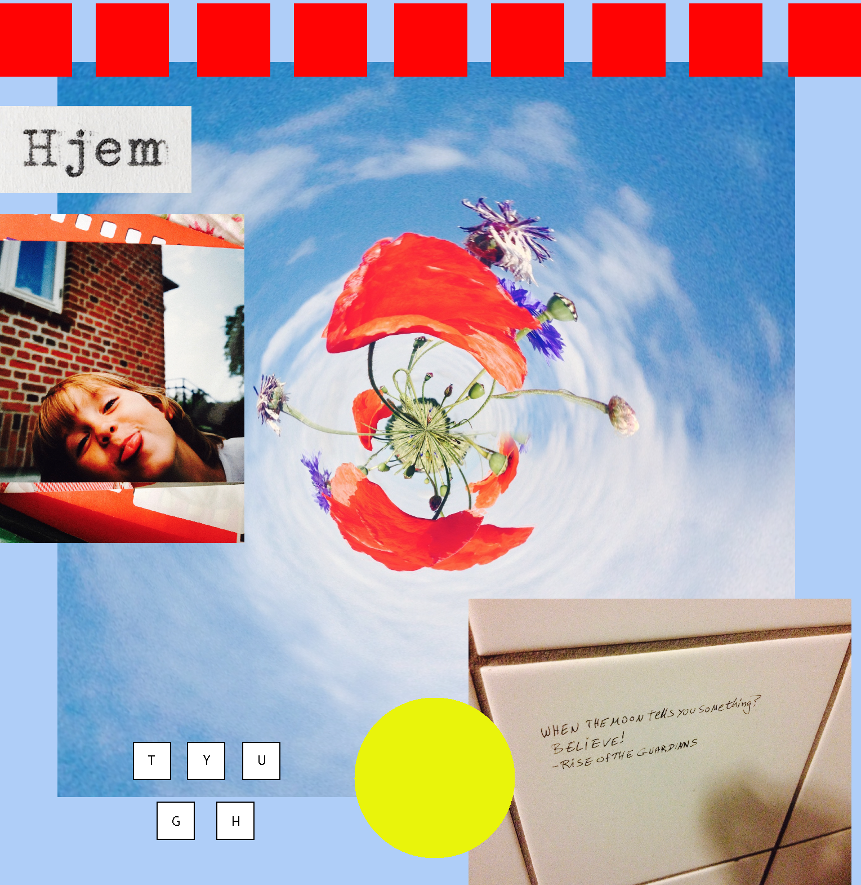
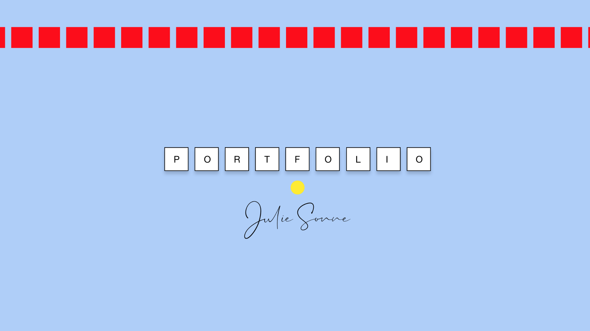
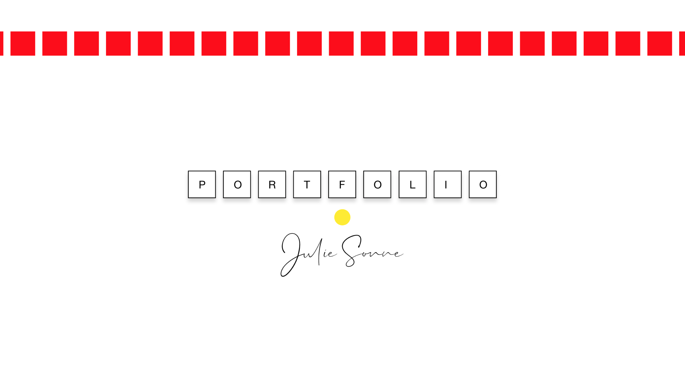

Bagom Portfolioen
Startede med at sammensætte et moodboard. Farverne og de geometriske figurer var specielt inspirerende. Målet var at skabe et moodboard, der formidler min hensigt med layout, samt evner at afspejle min personlighed.

Prototype med Adobe XD
Her blev der eksperimenteret med former, farver og opsætning. Målet var at skabe et layout, der var simplet, men samtidigt fangende. Rene linjer. Derudover skal brugeren nemt kunne navigere frem og tilbage, uden problemer. Den lyseblå farve er sites basisfarve. Den giver brugeren en bedre mulighed for at læse, fremfor en hvid basisfarve. På billederne ses sitet både med en hvid og lyse blå basisfarve og her ses, at skriftet er mere fremtrædende på det site med den lyseblå farve.
